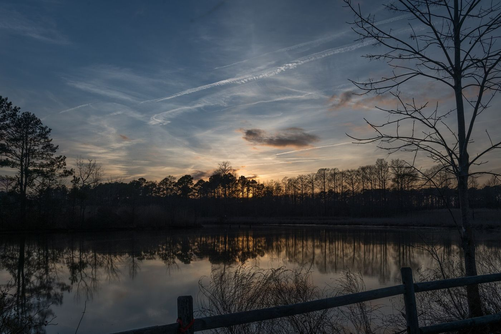

洪湖是一座被水包着的城市。夏天有莲蓬和菱角，秋天有螃蟹，冬天有一锅煨到粉的藕汤。
小时候最常去湖边。风一吹，荷叶翻过来，白茫茫一片。后来到武汉读书，才发现自己把湖边的慢和野，一起带在了身上。
如果非要推荐一天：早上在武汉吃一碗热干面，中午回洪湖喝藕汤，傍晚去湖边看日落。
如果你来洪湖，记得喝一碗排骨藕汤，藕要粉到拉丝。
02 — 家乡
从洪湖来，带着一身水汽。

洪湖是一座被水包着的城市。夏天有莲蓬和菱角，秋天有螃蟹，冬天有一锅煨到粉的藕汤。
小时候最常去湖边。风一吹，荷叶翻过来，白茫茫一片。后来到武汉读书，才发现自己把湖边的慢和野，一起带在了身上。
如果非要推荐一天：早上在武汉吃一碗热干面，中午回洪湖喝藕汤，傍晚去湖边看日落。
如果你来洪湖，记得喝一碗排骨藕汤，藕要粉到拉丝。
图片：Dinkun Chen、Randy Everette、Zheng Zhou / Wikimedia Commons / CC BY-SA 3.0 & 4.0
← 返回首页